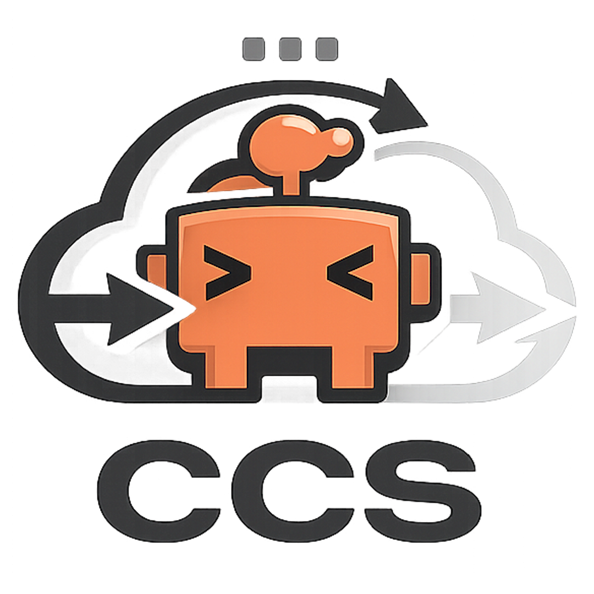

O **Claude Code Switcher (CCS)** intercepta e redireciona dinamicamente a ferramenta oficial Claude Code para modelos locais, DeepSeek, OmniRoute e outros, sem alterar seus arquivos originais.

Imagine que você tem uma TV de última geração chamada **Claude Code**. Por padrão, essa TV vem de fábrica travada apenas nos canais de uma única programadora (a **Anthropic**).
O **Claude Code Switcher (CCS)** é como um **Controle Remoto Universal Inteligente** que criamos. Com apenas um botão, ele destrava a TV e permite que você assista canais de qualquer outra programadora (como o **DeepSeek**, **OmniRoute** ou até mesmo o **seu próprio computador local**), sem que você precise desmontar a TV ou mudar os fios de lugar.
Nós não alteramos o programa oficial da Anthropic. Nós simplesmente mudamos as configurações ambientais ao redor dele. Quando o Claude Code acorda, ele lê as nossas configurações e acha que está falando com os servidores normais da nuvem, mas na verdade está sendo direcionado para o provedor que você escolheu!
Selecione o seu sistema operacional e cole o comando no seu terminal.
Execute no **PowerShell (como Administrador)** para instalar automaticamente e injetar a interceptação:
*Nota: Se preferir clonar o código local e testar:*
Abra o terminal do seu Mac e rode o comando abaixo para realizar a instalação remota:
Abra seu terminal Linux (Bash/Zsh) e execute o script automatizado:
Clique nos botões "Anterior" e "Próximo", ou selecione as etapas diretamente no gráfico para ver como a mágica acontece!
Tudo começa no terminal normal do seu computador. Você simplesmente digita o comando para iniciar a IA, exatamente como faria no dia a dia, sem nenhum comando longo ou chato.
Como nossa abordagem simples e limpa resolve o problema sem bagunçar seu sistema.
Nós não alteramos o executável original do Claude Code e não apagamos suas configurações de login. O programa oficial permanece intocado e seguro na sua máquina.
Instalamos um pequeno "filtro" (chamado de alias no Linux/Mac e wrapper function no Windows). Ele simplesmente complementa o comando `claude` adicionando o atalho do perfil ativo por trás dos panos.
O segredo está em uma ponte física no seu disco (um atalho de pasta chamado `active`). Mudar de IA com o `ccs switch` apenas altera para onde esse atalho está apontando, em menos de 1 milissegundo!
Quer se aprofundar em casos de uso específicos ou precisa de ajuda técnica? Confira nossos guias detalhados diretamente no repositório.
Aprenda a utilizar comandos como switch, add, edit, test e o modo efêmero avançado.
Instruções completas para configuração em Windows PowerShell, macOS, Linux e VPS corporativos.
Saiba como configurar e rotear requisições para a API e os modelos do ecossistema OmniRoute.
Como travar modelos (como Haiku ou Sonnet) para evitar gastos indesejados na sua chave Anthropic.
Guia definitivo para rodar o Claude Code localmente via Ollama (Qwen, Llama) usando o LiteLLM.
O Claude Code Switcher (CCS) é um utilitário utilitário de orquestração local que é executado **100% no seu próprio computador**. Ele **não coleta dados**, **não intercepta tráfego de rede** e **não transmite suas chaves de API** para nenhum servidor externo. Suas credenciais são guardadas de forma limpa em arquivos de configuração locais em seu diretório de usuário e são gerenciadas apenas pela própria ferramenta nativa Claude Code da Anthropic.
Sim, 100% seguras. Todos os perfis e chaves de API que você configura são salvos diretamente em uma pasta oculta no seu próprio computador (`~/.config/claude-profiles/`). O CCS não envia nenhuma informação para fora, não possui servidores externos de coleta e é totalmente privado.
Modelos locais rodando no seu computador (via Ollama) se disfarçam de servidores de nuvem. Usamos um programa leve de tradução (o LiteLLM) que traduz o idioma que o Claude Code fala (API Anthropic) para o idioma que o seu modelo local entende. É uma tradução simultânea em tempo real!
É incrivelmente fácil. Basta digitar `ccs off` ou `ccs switch anthropic`. O CCS desativará o atalho e o Claude voltará imediatamente a falar direto com os servidores oficiais da Anthropic como se nada tivesse acontecido.
Modelos locais pequenos (de 3B ou 7B parâmetros) são ótimos para chats simples, mas o Claude Code exige muito raciocínio para criar e ler arquivos de código. Modelos menores não conseguem processar essas instruções complexas e ficam "confusos" ou em loops. Não é um problema do CCS, mas sim o limite de força do modelo local escolhido.